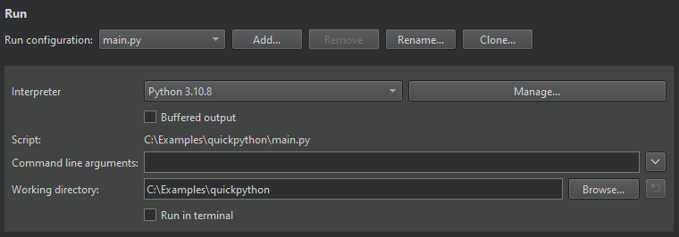

Setting Up Debugger
The main debugger preferences are associated with the kit you build and run your project with. To specify the debugger and compiler to use for each kit, select Preferences > Kits.

You need to set up the debugger only if the automatic setup fails because the native debugger is missing (for example, you must install the CDB debugger on Windows yourself) or because Qt Creator does not support the installed version. For example, when your system does not have GDB installed or the installed version is outdated, and you want to use a locally installed replacement instead.
To change the debugger in an automatically detected kit, select Preferences > Kits > Clone to create a copy of the kit, and change the parameters in the cloned kit. Make sure to enable the cloned kit for your project.
If the debugger you want to use is not automatically detected, select Preferences > Kits > Debuggers > Add to add it.

To use the debugging tools for Windows, you must install them. Optionally, you can set up the Microsoft Symbol Server if you need symbol information from Microsoft modules that is not found locally. For more information, see Setting CDB Paths on Windows.
To use the Free Software Foundation (FSF) version of GDB on macOS, you must sign it and modify your kit preferences.
This section describes the options you have for debugging C++ and Python code and installing the supported native debuggers. It also applies to code in other compiled languages such as C, FORTRAN, and Ada.
For more information about launching the debugger in different modes, see Debugger Operating Modes.
Supported Native Debugger Versions
Qt Creator supports native debuggers for debugging compiled code. On most supported platforms, you can use the GNU Symbolic Debugger (GDB). On Microsoft Windows, when using the Microsoft tool chain, you need the Microsoft Console Debugger (CDB). On macOS and Linux, you can use the LLDB debugger. On all supported platforms, you can use PDB to debug Python source code.
Note: You need a debugger version built with Python scripting support.
The following table summarizes the support for debugging C++ code:
| Platform | Compiler | Native Debugger |
|---|---|---|
| Linux | GCC, ICC | GDB, LLDB |
| Unix | GCC, ICC | GDB |
| macOS | GCC, Clang | LLDB, FSF GDB (experimental) |
| Windows/MinGW | GCC | GDB |
| Windows/MSVC | Microsoft Visual C++ Compiler | Debugging Tools for Windows/CDB |
Supported GDB Versions
Use GDB 7.5, or later, with the Python scripting extension and Python version 3.5, or later.
For remote debugging using GDB and GDB server, the minimum supported version of GDB server on the target device is 7.0.
Supported CDB Versions
Qt Creator supports all versions of CDB targeting platforms that Qt supports.
Supported LLDB Versions
The LLDB native debugger has similar functionality to the GDB debugger. LLDB is the default debugger in Xcode on macOS for C++ on the desktop. LLDB is typically used with the Clang compiler (even though you can use it with GCC, too).
On macOS you can use the LLDB version delivered with Xcode or build from source. The minimum supported version is LLDB 320.4. You need a LLDB version built with Python support.
On Linux, the minimum supported version is LLDB 3.8.
GDB Run Modes
The GDB native debugger used internally by the debugger plugin runs in different modes to cope with the variety of supported platforms and environments:
- Plain mode debugs locally started processes that do not need console input.
- Terminal mode debugs locally started processes that need a console.
- Attach mode debugs local processes started outside Qt Creator.
- Core mode debugs core files generated from crashes.
- Remote mode interacts with the GDB server running on Linux.
Installing Native Debuggers
The following sections describe installing native debuggers.
GDB
On Windows, use the Python-enabled GDB version that is bundled with the Qt package or comes with recent versions of MinGW. On most Linux distributions, the GDB builds shipped with the system are sufficient.
You can also build your own GDB, as instructed in Building GDB.
Builds of GDB shipped with Xcode on macOS are no longer supported.
Debugging Tools for Windows
To use the CDB debugger, install the Debugging Tools for Windows when you install Qt Creator either by using Qt Online Installer (in Qt > Tools > Qt Creator) or by using the stand-alone Qt Creator installation packages.
The 32-bit CDB version can only debug 32-bit executables, whereas the 64-bit version can debug both 64-bit and 32-bit executables. However, interrupting a 32-bit executable with a 64-bit debugger can result in a stack trace of the WOW64 emulator 32-bit emulation layer being displayed.
Qt Creator extends the command-line debugger by loading the qtcreatorcdbext.dll extension library into it. The library must be available in the libs\qtcreatorcdbext64 and libs\qtcreatorcdbext32 folder. To install it there, select Qt Creator CDB Debugger Support when you install Qt Creator.
When manually building Qt Creator using the Microsoft Visual C++ Compiler, the build process checks for the required files in "%ProgramFiles%\Debugging Tools for Windows".
Debugging Tools for macOS
The Qt binary distribution has both debug and release variants of the libraries. However, you have to explicitly tell the runtime linker that you want to use the debug libraries even if your application is compiled as debug, as release is the default library.
If you use a qmake based project in Qt Creator, you can set a flag in your run configuration, in Projects mode. In the run configuration, select Use debug version of frameworks.
For more detailed information about debugging on macOS, see: Mac OS X Debugging Magic.
LLDB
We recommend using the LLDB version that is delivered with the latest Xcode.
PDB
PDB is a source code debugger for Python applications. You can use it to debug projects that have a .pyproject configuration file.
You must install Python and set the interpreter to use in Projects > Run:

Start debugging the main.py file. If you encounter problems, check the active build target in the kit selector.
Qt Creator does not support mixed-mode debugging, but you can attach GDB to the Python interpreter to debug the C++ implementation of the corresponding Python code. For more information, see Debugging PySide with Qt Creator (Linux).
Setting up FSF GDB for macOS
To use FSF GDB on macOS, you must sign it and add it to the Qt Creator kits.
- To create a key for signing FSF GDB, select Keychain Access > Certificate Assistant > Create a Certificate:
- In the Name field, input fsfgdb to replace the existing content.
- In the Certificate Type field, select Code Signing.
- Select the Let me override defaults check box.
- Select Continue, and follow the instructions of the wizard (use the default settings), until the Specify a Location For The Certificate dialog opens.
- In the Keychain field, select System.
- Select Keychain Access > System, and locate the certificate.
- Double click the certificate to view certificate information.
- In the Trust section, select Always Trust in the When using this certificate field, and then close the dialog.
- To sign the binary, enter the following command in the terminal:
codesign -f -s "fsfgdb" $INSTALL_LOCATION/fsfgdb
- In Qt Creator, select Qt Creator > Preferences > Kits > Add to create a kit that uses FSF GDB.
- In the Debugger field, specify the path to FSF GDB (
$HOME/gdb72/bin/fsfgdb, but with an explicit value for$HOME). - To use the debugger, enable the kit in the Build Settings of the project.